Cas de la lentille divergente
Changeons de lentille pour passer aux lentilles divergentes. La différence par rapport aux cas précédents est que les positions des foyers objets et images sont inversées. Recommençons la procédure précédente.
Tracé de l'image
- On trace le rayon issu de
 et passant par 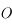. Il n'est toujours pas dévié.
et passant par 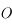. Il n'est toujours pas dévié. - On trace le rayon issu de et parallèle à l'axe optique. Il ressort de la lentille en passant par le foyer principal image . Mais ce foyer est en amont de la lentille.
- Par acquis de conscience, traçons un troisième rayon, et vérifions qu'il passe bien par
 . Traçons le rayon issu de
. Traçons le rayon issu de  et passant par le foyer principal objet 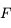. Il ressort parallèle à l'axe optique. On vérifie ainsi qu'il passe effectivement par le point
et passant par le foyer principal objet 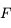. Il ressort parallèle à l'axe optique. On vérifie ainsi qu'il passe effectivement par le point 
- Il nous reste à tracer l'image
 du point 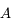. On ne peut utiliser la même méthode que le point
du point 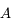. On ne peut utiliser la même méthode que le point  car tous ces rayons sont identiques et confondus avec l'axe optique. Comment s'en sortir alors. Utilisons la propriété d'aplanétisme. On sait que 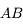 est perpendiculaire à l'axe optique. L'image
car tous ces rayons sont identiques et confondus avec l'axe optique. Comment s'en sortir alors. Utilisons la propriété d'aplanétisme. On sait que 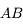 est perpendiculaire à l'axe optique. L'image  l'est également. 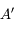 est donc le point de l'axe optique à la verticale de .
l'est également. 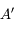 est donc le point de l'axe optique à la verticale de .
Construction géométrique
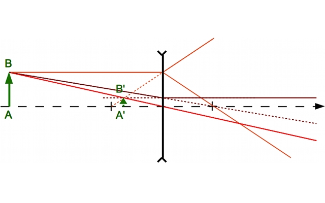
Crédit : Astrophysique sur Mesure / B. Mollier
On constate que
1)
L'image 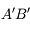 est :
2)
L'image  est :
est :
est :
 et d'une lentille divergente. Trouvez le tracé correct.
et d'une lentille divergente. Trouvez le tracé correct.